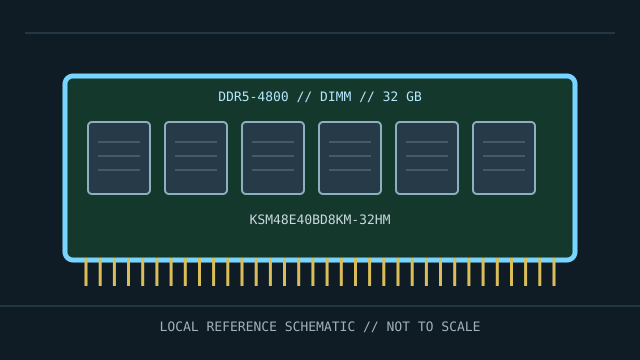

[ MANUFACTURER MODEL // MEMORY / RAM ]
Kingston Server Premier KSM48E40BD8KM-32HM
A model-specific DDR5-4800 memory module identified by manufacturer part number KSM48E40BD8KM-32HM. This record distinguishes the exact product from generation-wide module standards; subrevision, SPD, and platform qualification remain specimen-specific.

EXACT ID: Kingston KSM48E40BD8KM-32HM. Do not infer undocumented traits from the SKU alone; verify the label, full suffix, SPD and revision before service or compatibility decisions.
Model specifications
| Manufacturer / part ID | Kingston KSM48E40BD8KM-32HM |
|---|---|
| Module class | ECC unbuffered DDR5 DIMM; 288-pin server ECC UDIMM |
| Capacity / data rate | 32 GB; 4800 MT/s (PC5-38400) |
| Timing / voltage | CL40, JEDEC; nominal module voltage 1.1 V. Profile-dependent rates are identified where applicable; JEDEC fallback behavior may be slower. |
| Interface / organization | DDR5-4800, 288 contacts; 2Rx8 (verify exact revision). Pin count does not determine electrical compatibility: generation keying and module buffering/ECC class must match. |
| Platform and bus compatibility | Requires server/workstation platform supporting DDR5 ECC UDIMM and 32 GB capacity; DDR5 on-die ECC alone does not enable system-level ECC. Do not mix with RDIMMs. |
| Variant boundary | Specifications describe this full SKU as listed by its maker; manufacturers may change chips, ranks, SPD tables, or component revisions without changing the retail family. Preserve evidence for the actual specimen. |
Compatibility, service & archive notes
- Requires server/workstation platform supporting DDR5 ECC UDIMM and 32 GB capacity; DDR5 on-die ECC alone does not enable system-level ECC. Do not mix with RDIMMs.
- Before installation, compare motherboard/server service manual, CPU memory-controller support, BIOS/BMC version, supported capacity per slot, rank/density, channel population and the required ECC/buffering class. Similar pin count or physical fit is not proof of compatibility.
- Shut the host down and disconnect standby power as the service manual directs. Use ESD controls, handle the module by its edges, keep contacts clean, and never force a notched module. Observe platform-specific discharge and battery procedures.
- Do not mix UDIMM, RDIMM and LRDIMM in a memory channel unless the platform explicitly documents such a combination. ECC support depends on the CPU, board wiring, firmware and module type. DDR5 on-die ECC is not system-level ECC.
Preservation record
Photograph the label and notch, transcribe the full part number and date/revision code, save a read-only SPD dump, note channel/slot and host configuration, and record BIOS/BMC, operating rate, voltage/profile, memory test method and any ECC/error-counter results. Store removed modules in ESD-safe packaging.
Manufacturer & standards references
- Kingston KSM48E40BD8KM-32HM datasheetManufacturer document for this full server-module part number and revision family.
- JEDEC JESD79-5 — DDR5 SDRAMGeneration-level interface and electrical context. A standard does not establish a host's support for this capacity, rank, ECC, buffering, or profile.
Check the platform manufacturer’s service manual and qualified-memory list for final validation; saved module SPD and a physical label are the best archival evidence for an individual specimen.